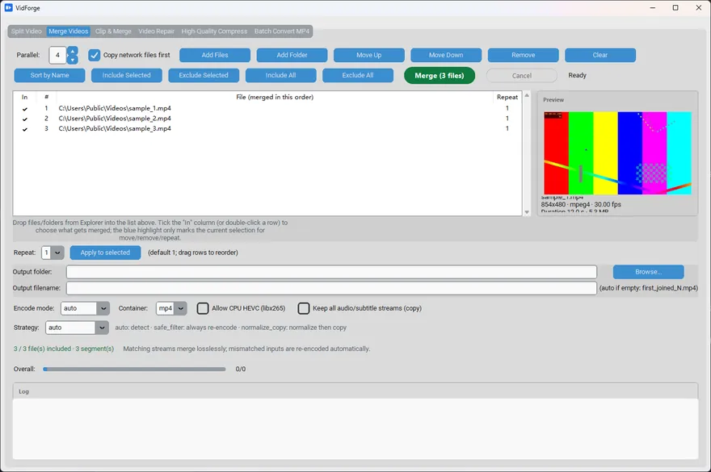
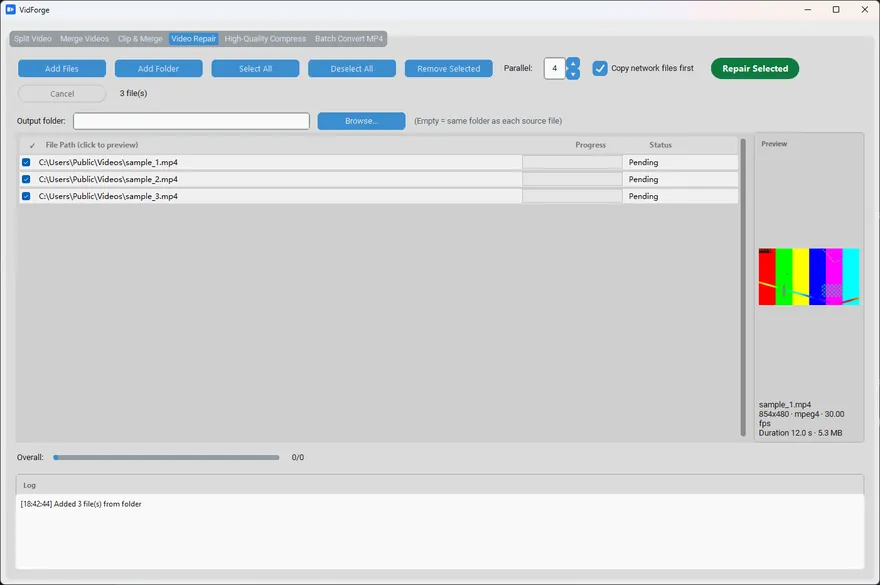

9 つのクリップを 5 秒で MP4 へ — 9 回のダイアログ操作なしで。
ほとんどの動画アプリは 1 つのクリップずつ のために作られています：ファイルを選び、プリセットを選び、出力名を決め、待つ、繰り返す。VidForge はフォルダのために作られています。バッチ全体をドロップし、出力フォルダを 一度だけ 指定すれば、ファイルごとに本当に必要な処理を判断します — コーデックが既に合っていれば ストリームコピー、必要なときだけ本物の再エンコード — その間 4 つのファイルが並列に動く、進捗バーは 1 本だけ。
変換、修復、圧縮、クリップ、結合、分割。同じルール、同じキュー、同じログ。
7 日間無料トライアルで全ツール解放 — その後は 2.99 ドルの買い切り。アカウントなし、透かしなし、アップロード上限なし、動画は PC の外に出ません。フォルダ を処理する人のために作りました：スマホやアクションカメラの素材、画面収録、途中までのダウンロード、章に切り分けたい長い配信アーカイブ。

編集アプリは 1 クリップ最適化。バッチは別の問題です
バッチは「同じ作業の繰り返し」ではありません。混在した入力のキューです：既に H.264 のファイル、スマホ由来の HEVC、末尾が壊れたコンテナ、結合が必要な 3 つ、そしてすべてが sensible な名前で同じフォルダに収まらなければなりません。それをタイムライン型エディタに任せると、退屈な部分 — ファイル管理 — を手作業で、ダイアログを 1 回ずつこなすことになります。
🗂 ファイルごとのダイアログ地獄
典型的なエディタで 20 クリップのフォルダを書き出すと、同じプリセット・同じビットレート・同じ出力フォルダを 20 回確認します。VidForge はキュー全体に対して 1 回だけ尋ねます。
⏳ 必要のない再エンコード
典型的なバッチの半分は既に目標形式です。VidForge はまずコーデックを確認し、該当ファイルは ストリームコピー します — 45 秒のクリップが 1 秒以内に、ビット単位で完全一致のまま到着します。
🧊 1 コアで待つ
書き出しを 1 つずつではマシンは遊んでいます。キューは 1〜8 ワーカーの並列実行 で動き、ファイルごとの進捗とステータス、共有のキャンセルを備えます。
「ルールベース」とはどういうことか
各タブはウィザードではなくルールの集まりです：どのファイルに、何をするか、結果をどこへ置くか、入力が理想でないとき何をするか。黙って決めることは何もなく — ログが 1 ファイルごとの判断を表示します。
| ジョブ | VidForge が適用するルール |
|---|---|
| 変換 | MP4 互換コンテナ内の H.264 → ストリームコピー。HEVC など → そのファイルだけ再エンコード。デコードできない音声 → バッチを失敗させず動画のみで再試行。 |
| 圧縮 | 解像度とフレームレートから bpp（1 ピクセルあたりビット）を推定。余力が ~10% 未満のファイルは スキップ — 再エンコードは時間と品質を浪費するだけです。 |
| 結合 | コーデック・解像度・フレームレート（±0.01）・ピクセル形式を比較。一致 → ロスレス連結。不一致 → 結合結果が再生できるよう再エンコード。 |
| クリップ | 各セグメントをストリームコピーで切り出し、セグメントごとに再エンコードへフォールバック、その後連結 — コピー経路が完全に失敗したときだけ全体を再エンコード。 |
| 修復 | コンテナのインデックスをストリームコピーで再構築。タイムスタンプが救いようがないときだけ再エンコード。 |
| 分割 | 個数による等分割。精密な再エンコードカット、またはキーフレームコピーで動画ごとのサブフォルダへ高速出力 — ソースは決して上書きしません。 |
主な特長
6 つのツールと、ファイルではなくフォルダを扱えるようにするキュー機構。
⇄ MP4 へのバッチ変換
ファイルまたはフォルダ全体を追加し、出力フォルダを 1 回指定すれば、スマートコピー / 再エンコードでキューを変換します。問題のないクリップに触れずに、スマホの HEVC 素材がどこでも再生できる H.264 になります。
🛠 動画修復
中断されたダウンロードの残骸 — .!qb, .part, .bc!, .xltd, .emule.td — を与えると、再生可能な MP4 が返ってきます。45 秒のクリップは約 1 秒で、ストリームコピーにより修復されます。
🗜 高品質圧縮
bpp 推定つきの品質考慮型圧縮で、縮小できないクリップは破損させずスキップします。サイズ・ビットレート・CRF・NVENC CQ の手動上書き — そして最後にバッチのまとめを表示。
✂ クリップと結合
多数のファイルに対して独立したセグメントセット、コンパクトな時刻入力（0101 = 00:01:01）、ドラッグで並べ替え、キーフレーム整合、GPU フォールバック、そして JSON 入出力で、繰り返すカットを再利用可能なプリセットに。
⇉ 動画結合
指定した順序で録画を 1 ファイルに結合。繰り返し回数、出力名のカスタマイズ、mp4 / mkv / mov コンテナ、任意の CPU HEVC、コピー時の音声・字幕ストリーム全保持に対応。
⧉ 動画分割
個数による分割とプリセット、任意の精密カット、自動的な <name>_split サブフォルダで、長い録画を衝突なく章に切り分けられます。
⚡ 並列ワーカー
1〜8 ファイルを同時に、1 つのキューと 1 本の進捗バーで。ファイルごとのステータス（待機 / 変換中 / 完了 / スキップ）と、バッチ全体をきれいに停止するキャンセル 1 つ。
🧠 スマートモード
可能なときはコピー、必要なときだけ再エンコード、目標に合うコーデックを選択、そして圧縮しても得がないものはオリジナルのまま保持します。
🔒 オフライン・プライベート
FFmpeg 同梱、テレメトリなし、ネットワーク通信なし、アカウントなし。ログは %LOCALAPPDATA% に残ります。プライバシーポリシー をご覧ください。
動作の様子を見る
脚本のない 1 回のセッション：混在 9 クリップの変換、4 ファイルの圧縮、3 クリップの結合、壊れたダウンロードの修復。ログの時計は本物 — 早送りはなく、ステップ間の停止だけをカットしています。
9 つのファイルを 4 つずつ
H.264 クリップはストリームコピー、HEVC の 1 クリップだけ再エンコード、キューは約 5 秒で空になります。
止めどきを知っている圧縮
4 クリップ入力、2.86 MB → 1.85 MB 出力 — まとめにファイルごとの正確な削減量が表示されます。
壊れたダウンロードを修復
<code>.mp4.!qb</code> の残骸がストリームコピーで再生可能な MP4 になります — 無事な映像は決して再エンコードされません。
使い方
4 ステップ。バッチごとに変わるのは最初の 2 つだけです。
ステップバイステップチュートリアル
散らかったフォルダから完成ファイルまで、各タブを使う順序で。

<name>_split フォルダが作られます。

00:10–00:25 またはコンパクトな 0101 形式で入力します。ドラッグで並べ替え、速度のためキーフレーム整合を保ち、セット全体を JSON で書き出して次のバッチで再利用できます。

.!qb / .part / .bc! の残骸をドロップし、選択項目を修復を押します。ステータスが修復完了（ストリームコピー）に変わり、ログが出力先のパスとサイズを確認します。ソースが NAS 上にある場合はネットワークファイルを先にコピーを使います。実際の活用シーン
バッチ処理が 1 分ではなく午後を節約する場面。
📱 スマホ・アクションカメラ素材
iPhone や近年の Android フラッグシップは HEVC で撮影します。休暇クリップのフォルダが、どこでも再生できる H.264 MP4 のフォルダに — テレビ、カーナビ、古いエディタでも — 既に H.264 のファイルは無加工のまま通過します。
🧲 途中までのダウンロード
qBittorrent は <code>.!qb</code>、eMule は <code>.part</code>、ブラウザーは <code>.crdownload</code> を残します。動画自体がほぼ完成していれば、その残骸は復元可能 — アプリがインデックスを再構築し、映像は手元に残ります。
🎥 画面収録と配信アーカイブ
OBS やキャプチャツールは章分けが必要な 2〜4 GB のファイルを出します。個数で分割するか、JSON プリセットで 12 本の収録から見せたいセグメントを 1 パスで切り出します。
🗄 アーカイブ圧縮
大きな MP4 ライブラリには 20〜40% の無駄なビットレートがあります。bpp 推定が余力のあるものを圧縮し、ないものはスキップし、合計「35% 削減」のまとめを表示 — 電気代に見合ったかがわかります。
🎬 分割録画の再結合
4 GB で止まるカメラや、セッションをまたいで分かれた録画は、パラメータが一致していれば再エンコードなしで 1 ファイルに戻ります — オリジナルの品質のまま、出力は 1 ファイル。
🏫 講義・会議の教材
1 学期分の講義収録：重いものは圧縮、2 部構成は結合、3 時間ものはトピックごとに分割、そしてすべての出力名を予測可能に保ちます。
よくある質問
VidForge は無料ですか？
最初の 7 日間は無料です — Microsoft Store の listing には全ツール解放の 7 日間無料トライアルが含まれます。その後は 2.99 ドルの買い切り：サブスクリプションなし、アカウントなし、透かしなし、アップロード上限なし。
動画をどこかにアップロードしますか？
いいえ。処理はすべてアプリ内蔵の FFmpeg があなたのマシン上で行います。テレメトリもネットワークアクセスも一切ありません — プライバシーポリシー をご覧ください。
バッチ変換が速い理由は？
作業の大部分がスキップされるからです。MP4 互換ストリームのファイルはストリームコピー — デコードもエンコードも品質変化もなし — で、本当の変換だけが並列で再エンコードされます。上のデモでは混在 9 クリップが約 5 秒で完了しました。
オリジナルを上書き・変更しませんか？
しません。結果は指定した出力フォルダに書き込まれ、空のままなら各結果はソースの隣に、分割は常に動画ごとのサブフォルダに書き込まれます。ソースファイルは読み込み専用です。
途中までの動画を修復できますか？
たいていはできます — ダウンロード済みのバイトが読めるストリームを含んでいれば。VidForge はストリームコピーでコンテナのインデックスを再構築し、タイムスタンプが救えない場合だけ再エンコードに切り替えます。復元できるのは実際にダウンロードされた部分だけです：30% で止まったファイルは長さの約 30% まで再生できます。
結合で再エンコードして品質が落ちますか？
入力が一致しないときだけです。VidForge はコーデック・解像度・フレームレート（許容 ±0.01）・ピクセル形式を比較し、一致していればそのまま連結されるため、出力はビット単位で同じ動画になります。不一致の入力は再エンコードされ、結合結果は再生可能です。
FFmpeg のインストールは必要ですか？
いいえ。FFmpeg と ffprobe はアプリに同梱されています。PATH には何も追加されず、実行時にダウンロードされるものもありません。
HEVC / H.265 と NVENC に対応していますか？
はい。スマートモードでは H.264 はコピーされ、HEVC は互換性のため H.264 に再エンコードされます。ハードウェア NVENC は圧縮とフォールバック用に自動検出され、CPU x265 も選択肢として利用できます。
GPU 搭載でないノート PC でも使えますか？
はい。ハードウェアエンコードは任意で — アプリは libx264 / libx265 にフォールバックします。ストリームコピーと修復にはエンコーダがまったく不要なので、内蔵グラフィックスでもフルスピードで動きます。
システム要件は？
Windows 10 または Windows 11、64 ビット。アプリと FFmpeg 同梱版に約 200 MB のディスク容量。GPU は不要。NVIDIA の専用 GPU があれば圧縮が速くなるだけです。
サポートへの連絡方法は？
30329277@qq.com まで、アプリのバージョンと可能ならログペインの最後の数行を添えてメールしてください。返信は通常 24〜48 時間以内です。
システム要件
| OS | Windows 10 / Windows 11、64 ビット |
| ディスク | アプリと FFmpeg 同梱版に約 200 MB、加えて出力用の空き容量 |
| GPU | 任意。NVENC があれば使用、なければ CPU の x264 / x265 |
| ネットワーク | まったく不要 — ソースが NAS 上にある場合のみ（<i>ネットワークファイルを先にコピー</i> を使用） |
| 入力 | MP4、MOV、MKV、AVI、および同梱 FFmpeg がデコードできるすべて — 部分的なダウンロードも含みます |
アプリを入手
VidForge は Windows 10・11（64 ビット）向けに Microsoft Store で配信中です。7 日間の無料トライアルはフルアプリ — 全ツール解放、透かしなし、制限なし — で、終了後は 2.99 ドルの買い切りでそのまま使えます（サブスクなし）。ストアの listing にはスクリーンショット、システム要件、現地通貨の価格が表示され、プライバシーポリシー はこのサイトで公開しています。
Windows 10 / 11 · 64 ビット 7 日間の無料トライアル 2.99 ドル買い切り FFmpeg 同梱 アカウント不要